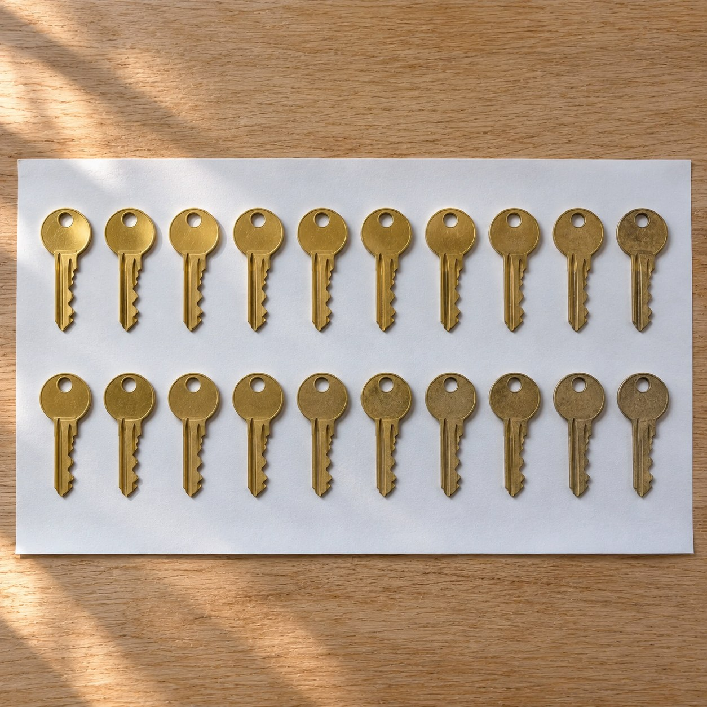
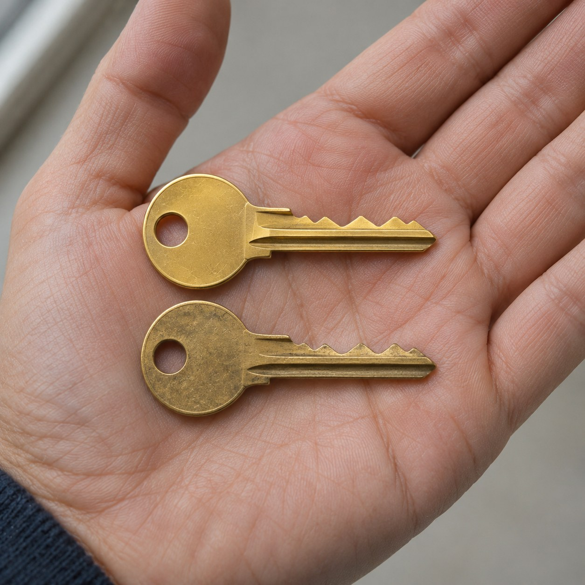

Cut From the Last One


My front door key was cut from a copy, which was cut from a copy. No one remembers the first one.
I took it to a key cutter and asked for a copy. Then I took the copy, not the key I came in with, to another key cutter in another town, and asked for a copy of that. Twenty shops, twenty keys, each one cut only from the one before.
A key cutter never sees the lock. The old key is clamped on one side of the machine and a blank on the other, and as a guide traces the teeth, a wheel cuts them. Every machine is a little off. One rounds a corner. One shaves a hair from a peak, another leaves a hair in a valley. Laid in a row, every key looks exactly like its neighbour.
The fourteenth still opened my door. The fifteenth slid into the lock all the way and would not turn. I went on to twenty anyway.
In 1969 Alvin Lucier recorded himself reading a short text in a room, played the tape back into the room and recorded it again, and again, until his words dissolved and only the ringing of the room was left. What survives a copy of a copy is not the thing. It is the copying.
So the teeth of the last key no longer describe my lock. They describe twenty machines and the hands that ran them, each small habit laid over the one before. It is the most faithful object I own. It agreed with every key it ever met. It only lost touch with the door.
I have tried to find the moment it stopped being my key. Hold the fourteenth and the fifteenth up to the window and no one could tell them apart. The difference does not live in either key. It lives in the lock, and the lock was never asked.
The twentieth is on my key ring now, beside the one that works. Somewhere, perhaps, there is a door it has been drifting toward all along.